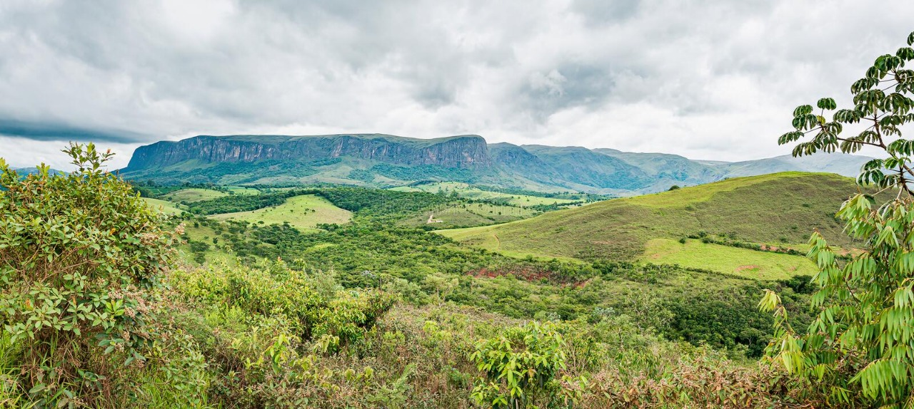

Serra da Canastra
A Serra da Canastra tem esse nome devido ao seu formato de baú, e canastra é um tipo de baú antigo. Nela está preservado um dos mais importantes biomas do Brasil, o Cerrado. Conhecida como o berço da nascente do rio São Francisco e sua famosa cachoeira de Casca d’Anta com aproximadamente 186 metros de altura.
Devido ao seu relevo, a Serra Canastra possui várias nascentes d’água com inúmeras cachoeiras de rara beleza e água cristalina, proporcionando ainda várias trilhas que atendem aos mais diversos gostos, a pé, de bike, tração animal e até aéreo, além da sua culinária inconfundível com seu principal representante o inigualável queijo da Canastra, além da hospitalidade característica do “jeitim mineiro” de atender.
Para saber mais venha fazer, primeiramente um passeio digital e depois, nós da Babilônia Canastra Turismo teremos um imenso prazer em auxiliá-lo no seu passeio físico.